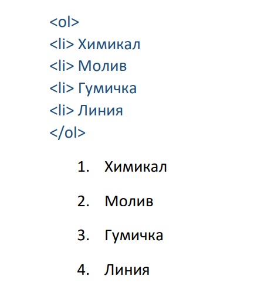
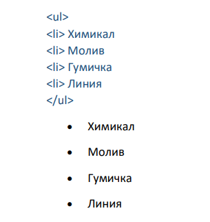
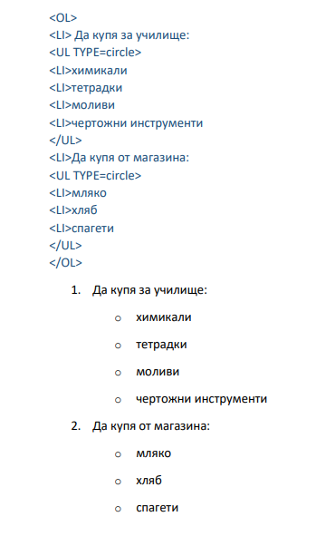

В HTML имаме възможност за създаване на списъци, чрез които можем да изброяваме и поясняваме отделни елементи от документа. Списъците са разделени на два вида: подредени и неподредени, като избора от кой вид ще използваме зависи от контекста на представяните елементи и дали е нужно да бъдат номерирани.
Подредени списъци
Подредените списъци се обозначават с тага <ol> и </ol>, като последователността на елементите може да бъде както номерирана, така и обозначена с букви.
Примери:
Неподредени списъци
Подредените списъци се обозначават с тага <ul> и </ul>, като вида разделител зависи от CSS-а използван за неподреденият списък.
Примери:
Вложени списъци
Вложените списъци са списъци, вложени едни в други, като по този начин може да се постигне цялостен списък, създаден от подредени и неподредени списъци.
Примери:
